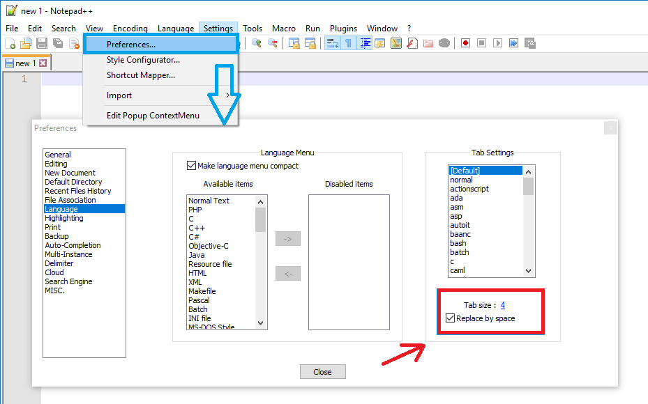
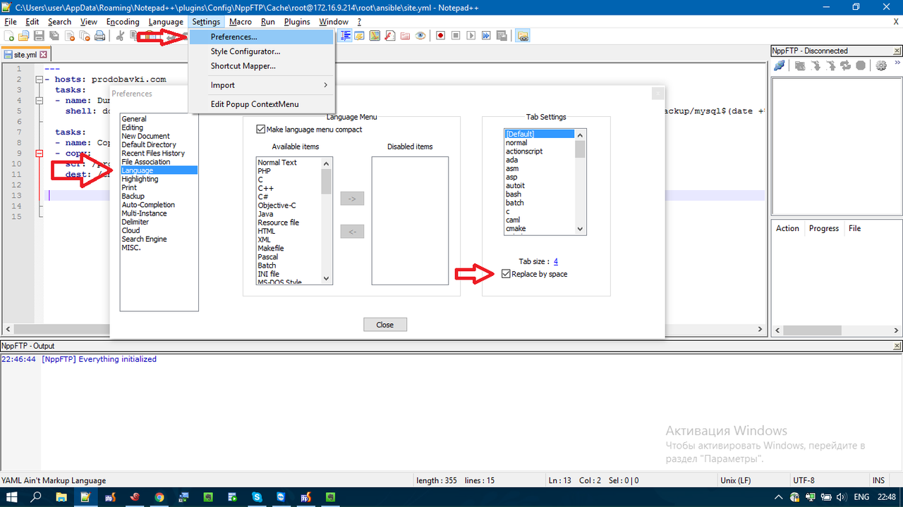

How do I configure Notepad++ to use spaces instead of tabs?
Notepad++ keeps inserting tabs which later messes up my code. This doesn't just happen when I hit the tab key, but other times as well. I want it to use 4 spaces instead of tabs.
How can I make Notepad++ insert spaces instead of tabs?
Answer
Go to the Preferences menu command under menu Settings , and select Language Menu/Tab Settings , depending on your version. Earlier versions use Tab Settings. Later versions use Language. Click the Replace with space check box. Set the size to 4.

See documentation: https://npp-user-manual.org/docs/preferences/#language
Suggest
In my Notepad++ 7.2.2, the Preferences section it's a bit different.
The option is located at: Settings / Preferences / Language / Replace
by space as in the Screenshot.
